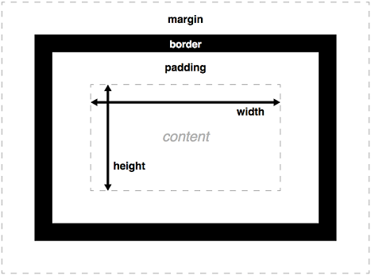

Модель блочной коробки (Box Model).
Модель блочной коробки описывает, как элементы HTML представлены в браузере. Каждый элемент воспринимается как прямоугольная коробка, состоящая из нескольких слоев. Эти слои определяют, как элемент взаимодействует с другими элементами и как управляется его размер и положение на странице.
Структура Box Model
Модель блочной коробки включает следующие компоненты (изнутри наружу):
- Content (Содержимое):
- Это область, в которой отображается контент, например, текст или изображения.
- Ширина (
width) и высота (height) элемента задаются для этой области.
- Padding (Внутренние отступы):
- Пространство между содержимым элемента и его границей (
border). - Padding увеличивает размер элемента, но не влияет на его позиционирование относительно других элементов.
- Задается свойствами
padding-top,padding-right,padding-bottom,padding-leftили сокращенной записью padding.
- Пространство между содержимым элемента и его границей (
- Border (Граница):
- Граница, которая окружает содержимое и отступы.
- Ширина границы влияет на общий размер элемента.
- Настраивается свойствами
border-width,border-style,border-colorили сокращенной записьюborder.
- Margin (Внешние отступы):
- Пространство между элементом и другими элементами на странице.
- Задается свойствами
margin-top,margin-right,margin-bottom,margin-leftили сокращенной записьюmargin. - Отступы могут быть отрицательными, что позволяет перекрывать элементы.
Визуализация Box Model
Для лучшего понимания можно представить Box Model следующим образом:
Управление размерами элементов
1. Ширина и высота
Когда вы задаете ширину (width) и высоту (height) элемента, вы указываете размеры только содержимого (content). Padding, границы и отступы увеличивают общий размер элемента.
Пример:
/*CSS*/
div {
width: 200px;
height: 100px;
padding: 20px;
border: 5px solid black;
margin: 10px;
}
- Content: 200px x 100px
- Padding: 20px со всех сторон (увеличивает размеры на 40px по ширине и 40px по высоте)
- Border: 5px со всех сторон (увеличивает размеры на 10px по ширине и 10px по высоте)
- Margin: 10px со всех сторон (пространство вокруг элемента)
2. Общий размер элемента
Общий размер элемента вычисляется следующим образом:
- Общая ширина = ширина содержимого + padding (слева и справа) + ширина границы (слева и справа)
- Общая высота = высота содержимого + padding (сверху и снизу) + ширина границы (сверху и снизу)
Для примера выше:
- Общая ширина = 200px + 40px + 10px = 250px
- Общая высота = 100px + 40px + 10px = 150px
Свойство box-sizing
Свойство box-sizing управляет тем, как рассчитывается размер элемента:
box-sizing: content-box(по умолчанию):- Ширина и высота применяются только к содержимому.
- Padding и граница не включаются в указанные размеры, что может привести к тому, что элемент займет больше места, чем ожидалось.
box-sizing: border-box:- Padding и граница включаются в указанные размеры.
- Это упрощает управление размерами элементов, так как вы точно знаете, какой будет итоговый размер элемента.
Пример:
/*CSS*/
div {
box-sizing: border-box;
width: 200px;
padding: 20px;
border: 5px solid black;
}
Теперь общий размер элемента будет ровно 200px по ширине, так как padding и граница учитываются.
Управление отступами: Margin Collapsing
Явление "схлопывания" отступов (Margin Collapsing)
Когда вертикальные отступы двух блочных элементов встречаются, они могут "схлопнуться" (объединиться в один отступ), вместо того чтобы суммироваться.
Пример:
<!-- HTML -->
<div style="margin-bottom: 20px;">Элемент 1</div>
<div style="margin-top: 30px;">Элемент 2</div>
Результат:
Вместо 50px между элементами будет только 30px, так как используется больший из двух отступов.
Лучшие практики использования модели блочной коробки
- Используйте
box-sizing: border-boxдля упрощения расчета размеровbox-sizing: border-boxпомогает управлять размером элемента, включая отступы и границу в указанные размеры. Это упрощает макетирование и предотвращает проблемы с переполнением элементов.- Чтобы применять это глобально ко всем элементам на странице, можно использовать следующий CSS:
- Избегайте чрезмерного использования отступов и вложенности
- Старайтесь минимизировать количество вложенных элементов и используйте отступы (
margin) и внутренние отступы (padding) с учетом общего дизайна. - Перегрузка разметки лишними контейнерами усложняет поддержку и стилизацию.
- Старайтесь минимизировать количество вложенных элементов и используйте отступы (
- Применение резиновой верстки
- При создании адаптивного дизайна используйте относительные единицы измерения, такие как проценты (
%),em, илиrem. Это позволяет элементам масштабироваться в зависимости от размера экрана или базового шрифта.
- При создании адаптивного дизайна используйте относительные единицы измерения, такие как проценты (
/*CSS*/
*,
*::before,
*::after {
box-sizing: border-box;
}
Это правило гарантирует, что все элементы и псевдоэлементы будут учитывать padding и границы в своих размерах.
Совет: Организуйте структуру вашей разметки так, чтобы она была легко читаемой и логически структурированной. Это поможет избежать хаоса в стиле и упростит отладку.
Пример адаптивного контейнера:
/*CSS*/
.container {
width: 80%; /* Относительная ширина */
padding: 2em; /* Относительный внутренний отступ */
border: 1px solid #ccc;
}
Методы отладки модели блочной коробки
- Использование инструментов разработчика в браузере
- Современные браузеры (например, Chrome, Firefox) предоставляют мощные инструменты для отладки. Вы можете щелкнуть правой кнопкой мыши на элементе и выбрать "Inspect" (или аналогичную опцию), чтобы открыть панель инструментов разработчика.
- Вкладка "Elements" покажет структуру вашего HTML и все примененные стили, а также визуализирует модель блочной коробки. Вы можете увидеть размеры содержимого, padding, границу и отступы.
Совет: Нажмите на элемент в инспекторе, чтобы получить наглядное представление о Box Model и визуально проверить правильность ваших расчетов.
- Отображение размеров элементов в реальном времени
- Инструменты разработчика позволяют изменять стили элементов в реальном времени. Это удобно для тестирования различных значений отступов, padding и границ без необходимости обновления страницы.
- Экспериментируйте с
box-sizing, чтобы увидеть разницу в расчетах размеров.
- Отладка с использованием вспомогательных стилей
Иногда, для упрощения понимания расположения элементов на странице, вы можете использовать временные стили. Например, можно выделить элементы цветами:
/*CSS*/
* {
outline: 1px solid red; /* Подсвечивает все элементы красной рамкой */
}
Это поможет быстро определить границы элементов и понять, как они расположены.
Примеры реальных сценариев использования Box Model
- Создание карточек с информацией
- Создание выравнивания элементов с использованием Margin
- Проблемы с отступами у дочерних элементов
- Добавить границу или padding к родительскому элементу.
- Использовать
overflow: hiddenилиdisplay: flex.
Карточки часто используются для отображения информации в виде блока с текстом и изображениями. Box Model помогает грамотно распределить внутренние и внешние отступы.
Пример карточки:
<!-- HTML -->
<div class="card">
<img src="image.jpg" alt="Пример изображения" class="card-img">
<div class="card-content">
<h2 class="card-title">Заголовок</h2>
<p class="card-description">Описание карточки...</p>
</div>
</div>
/*CSS*/
.card {
width: 300px;
padding: 15px;
border: 1px solid #ddd;
margin: 20px;
box-sizing: border-box;
}
.card-img {
width: 100%;
height: auto;
}
.card-content {
padding: 10px;
}
Результат:
Заголовок
Описание карточки...
Иногда требуется выровнять элемент по центру родительского контейнера. Самый простой способ сделать это с блочным элементом — использовать margin: auto.
Пример центрирования блока:
/*CSS*/
.container {
width: 80%;
margin: 0 auto; /* Центрирование блока */
}
Этот подход применяется для горизонтального центрирования блока фиксированной ширины.
Если у дочерних элементов есть отступы, они могут "схлопываться" с родительскими, вызывая неожиданные результаты. Чтобы избежать этого, можно:
Пример предотвращения схлопывания отступов:
/*CSS*/
.parent {
padding: 10px; /* Альтернатива, чтобы избежать схлопывания */
}
Эти знания помогут вам более эффективно использовать модель блочной коробки в разработке, избегать распространенных ошибок и создавать более управляемую и адаптивную верстку.